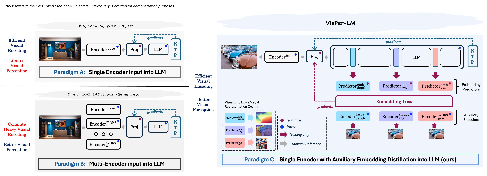
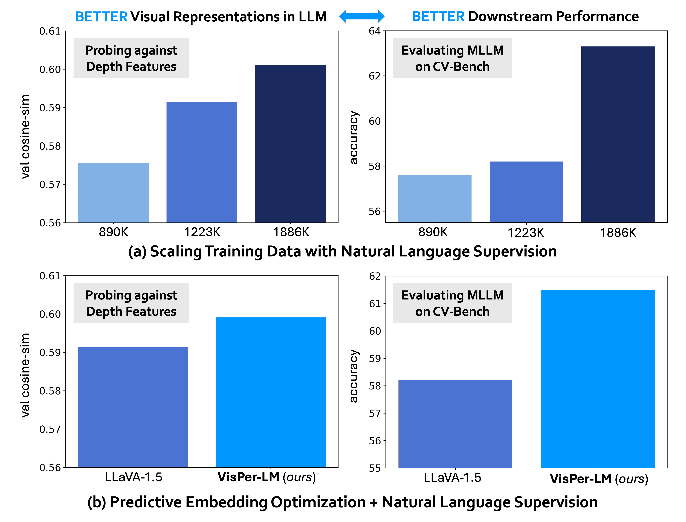
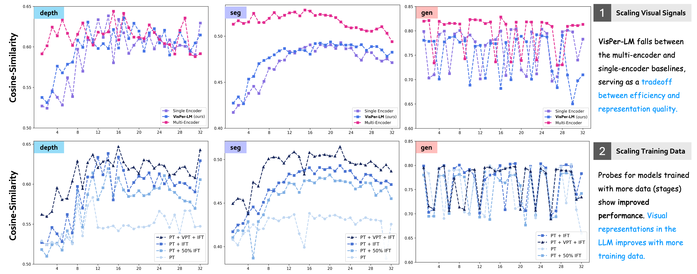
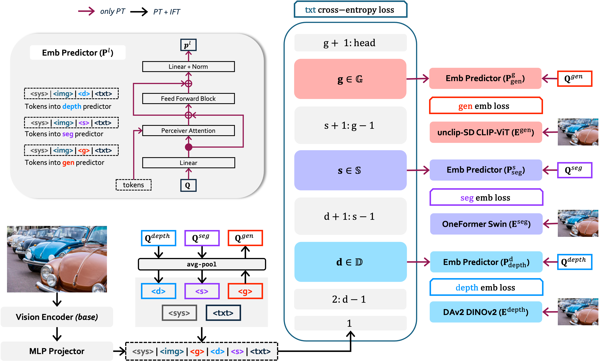
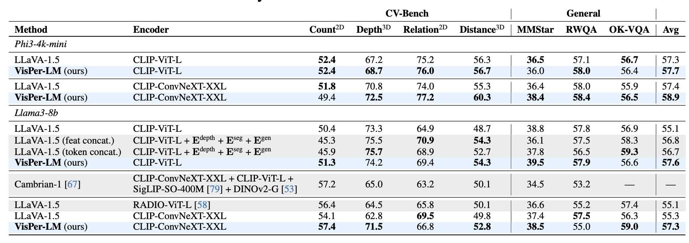

We propose distilling target visual information into
the intermediate representations of the LLM from a set of target encoders. We adopt a predictive embedding optimization approach
at selected LLM layers during training to minimize the embedding losses along with the next token prediction (NTP) objective, resulting
in a vision-centric approach to training the Multimodal Large Language Model. We only use a single base vision encoder during inference, resulting in compute efficient visual encoding along with better visual perception.

Abstract
In recent times, the standard practice for developing MLLMs is to feed features from vision encoder(s) into the LLM and train with natural language supervision. This approach often causes models to lean towards language comprehension and undermine the rich visual perception signals present in the data, which are critical for tasks involving spatial reasoning in the domain of embodied AI and robotics. Is it possible to optimize both at the same time?
In this work, we propose VisPer-LM, the first approach that infuses visual perception knowledge from expert vision encoders into the LLM's (of an MLLM) hidden representations. We start by investigating MLLMs trained solely with natural language supervision and identify a positive correlation between the quality of visual representations within these models and their downstream performance. Given this insight, we formulate the objective during the pretraining stage in MLLMs as a coupled optimization of predictive visual embedding and next (text) token prediction. Moreover, through extensive probing, we observe improved visual representation quality due to embedding optimization, underscoring the effectiveness of our probing setup. We demonstrate that our VisPer-LM outperforms the single and multi-encoder baselines, proving our approach's superiority over explicitly feeding the corresponding features to the LLM. In particular, VisPer-LM boosts performance by an average margin of up to 2.5% on various benchmarks, with a notable improvement of 8.7% on the Depth task in CV-Bench.
Visually Probing MLLM Representations
Representation Quality's Effect on Performance
We establish a relationship between the visual representation quality inside the LLM and the observed downstream performance through a series of probing experiments against features from a set of target encoders:
(a) We observe that increasing the amount of data and training solely with the next-token prediction objective enhances the visual representation quality within the LLM, resulting in improved performance, underscoring the effectiveness of our probing setup.
(b)VisPer-LM exhibits superior visual representations and performance compared to LLaVA-1.5 under the same settings, demonstrating the effectiveness of minimizing the predictive embedding objective during training.

Key Insights

Layerwise Trend:The middle (12-24) layer probes show the best representation quality for the depth and seg probing tasks, with an upward trend in quality in the initial layers and a downward
trend in the deeper layers. We attribute the fairly high cosine similarity (greater than 0.7) for all layers
with some irregularities to the choice of CLIP-based target encoder during gen probing.
Visual Encoding Approach: The probes for the multi-encoder MLLM learn better representations than the probes for the single-encoder MLLM. We
also train probes on our VisPer-LM and observe that they
fall between the two baselines, serving as a good trade-off
between efficiency and visual representation accuracy.
Training Data: We observe that with an increase in the
amount of training data for the probed model, the probes
show gradual improvement, indicating that the representations of the visual world inside MLLMs and, consequently,
performance on downstream tasks improve with just natural
language supervision on more data!
Embedding Visual Information into LLM

During Pre-Training (PT), we optimize an embedding loss at specific layers for each target encoder:
layers \(d \in \mathbb{D}\), \(s \in \mathbb{S}\), and \(g \in \mathbb{G}\) for the depth, segmentation,
and generation tasks, respectively. We use a resampler-based embedding predictor,
denoted as \(\mathbf{P}^{l}_\text{\{task\}}\) at each layer \(l\), to output predictions.
Each predictor takes in two inputs: a set of learnable queries (\(\mathbf{Q}^\text{\{task\}}\)) and
the token sequence from layer \(l\), with special tokens for other tasks omitted.
The final loss is the sum of embedding losses across all selected layers and the next-token prediction objective.
During IFT, we train with only the next-token prediction objective while keeping the special tokens frozen so as
not to affect their task-specific nature.
Results

We present results across different base encoders and decoder LLMs. Our VisPer-LM outperforms the single encoder and multi encoder LLaVA-1.5 by up to 2.5% and 0.9%
on average across various benchmarks, respectively. The best numbers are set in bold for every base-encoder and decoder LLM combination. Please check our paper 📄 for extensive experiments and ablation studies.
Citation
If you found our work useful in your research, please consider starring
⭐ us on
GitHub
and citing 📚 us in your research!
@inproceedings{jain2025visper_lm,
title={{Elevating Visual Perception in Multimodal LLMs with Visual Embedding Distillation}},
author={Jitesh Jain and Zhengyuan Yang and Humphrey Shi and Jianfeng Gao and Jianwei Yang},
booktitle={NeurIPS},
year={2025}
}